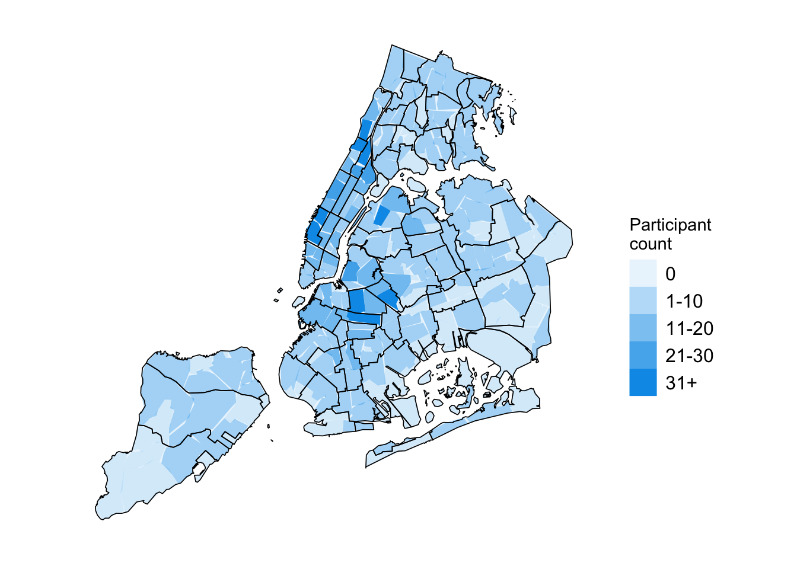

scale_labels<-c("0", "1-10", "11-20", "21-30", "31+")mpxnyc::neighborhood_sf_obj|>sf::st_as_sf()|>dplyr::left_join(make_tabledata_residence(), by ="neighborhood")|>dplyr::mutate(count =ifelse(is.na(count), 0, count))|>dplyr::mutate(count_cat =cut(count, c(-1,0,10,20,30,76), scale_labels))|>dplyr::arrange(-count)|>ggplot2::ggplot()+ggplot2::geom_sf(data =mpxnyc::community_sf_obj, fill ="white", linewidth =0, color =NA)+ggplot2::geom_sf(data =mpxnyc::community_sf_obj, fill ="#009BE8", linewidth =0, color =NA, alpha =0.1)+ggplot2::geom_sf(ggplot2::aes(alpha =count_cat), linewidth =0, fill ="#009BE8", color ="#C5EFFF")+ggplot2::geom_sf(data =mpxnyc::community_sf_obj, fill =NA, linewidth =0.3, color ="black")+ggplot2::scale_alpha_discrete("Participant\ncount")+theme_mpxnyc_blank( plot.background =ggplot2::element_rect(fill ="white"), legend.position ="right")

Figure 7.1: Number of participants by neighborhood in New York City
MPX NYC participants reflect a vivid cross-section of queer and trans New York. They lived in familiar queer neighborhoods—from Hell’s Kitchen to Bedford-Stuy—and brought with them diverse experiences of health, identity, and connection. This section paints a portrait of who they were and how they were connected.
7.1 Home neighborhood
The distribution of home neighborhoods reveals the geographic heart of queer New York during the mpox outbreak. Most participants lived in Manhattan and Brooklyn, with notable concentrations in historically queer and culturally mixed areas like Hell’s Kitchen, Harlem, Crown Heights, and Bedford-Stuyvesant. This clustering suggests that mpox risk—and opportunities for outreach—were shaped not only by individual behavior but also by neighborhood networks of nightlife, social connection, and shared spaces.
7.2 Demographics
MPX NYC participants were demographically diverse (see Table 7.1 and Figure 7.2). Over half were aged 18–34. About two-fifths were white cisgender men, 15 percent Latinx cisgender men, 10 percent Black cisgender men. Roughly 5 percent were transgender (half trans men) and 7 percent non-binary. Two-thirds identified as gay, 14 percent bisexual, 12 percent queer.
Figure 7.2: Sexual orientation of MPX NYC participants by race and gender
Patterns of sexual orientation varied widely by gender modality. Most cis men identified as gay; trans men were most often queer; trans women were more often straight or bisexual; cis women were mostly straight, then bisexual, then queer; non-binary participants were mainly queer.
7.3 Connection
The connection patterns in MPX NYC highlight a city alive with intimacy and community. Most participants maintained active networks of queer and trans friends—many with frequent contact both social and physical. Even in a moment defined by a health emergency, touch and togetherness remained central to queer life (see Table 7.2).
Table 7.2: Participants in MPX NYC Study by Sex / Physical Contact in Congregate Setting in past 4 weeks
Variable
Physical or sexual contact in group setting in past 4 weeks
p-value2
Yes
N = 5301
No
N = 7741
Overall
N = 1,3041
Recent important social contacts
<.001
0
64 (12%)
155 (20%)
219 (17%)
1-5
206 (39%)
333 (43%)
539 (41%)
6-10
136 (26%)
167 (22%)
303 (23%)
11-15
49 (9.2%)
41 (5.3%)
90 (6.9%)
16+
75 (14%)
78 (10%)
153 (12%)
Recent physical contacts
<.001
0
98 (18%)
301 (39%)
399 (31%)
1
68 (13%)
191 (25%)
259 (20%)
2
66 (12%)
105 (14%)
171 (13%)
3
46 (8.7%)
64 (8.3%)
110 (8.4%)
4
47 (8.9%)
32 (4.1%)
79 (6.1%)
5+
205 (39%)
81 (10%)
286 (22%)
Recent individual sex contacts
<.001
0
48 (9.1%)
272 (35%)
320 (25%)
1
86 (16%)
258 (33%)
344 (26%)
2
96 (18%)
110 (14%)
206 (16%)
3
82 (15%)
62 (8.0%)
144 (11%)
4
62 (12%)
29 (3.7%)
91 (7.0%)
5+
156 (29%)
43 (5.6%)
199 (15%)
Hookup travel time
<.001
0-15 min
121 (23%)
262 (34%)
383 (29%)
16-30 min
221 (42%)
270 (35%)
491 (38%)
31-45 min
71 (13%)
88 (11%)
159 (12%)
45+ min
117 (22%)
154 (20%)
271 (21%)
Data source: MPX NYC 2022
1n (%)
2Pearson’s Chi-squared test
Roughly two-thirds of participants reported contact with one to ten queer or trans friend in the past month, while one in five maintained larger networks of 11 or more.
Travel patterns further emphasize the geography of connection: about one-third traveled 16–30 minutes for hookups, another third more than 30 minutes, mapping a social city whose bonds stretch across different scales. Strikingly, two out of five participants had sexual or physical contact in a group setting.
7.4 Health
The health profiles of MPX NYC participants reveal a community already deeply engaged in prevention, yet navigating overlapping health concerns. About one in ten participants was living with HIV and two in five were on PrEP. The overwhelming majority of those living with HIV were virally suppressed — a sign of engagement with clinical care (see Table 7.3).
Show Table 6.3: Health
Code
make_tabledata_health()|>draw_table_by_groupSex()
Table 7.3: Participants in MPX NYC Study by Sex / Physical Contact in Congregate Setting in past 4 weeks
Variable
Physical or sexual contact in group setting in past 4 weeks
p-value2
Yes
N = 5301
No
N = 7741
Overall
N = 1,3041
HIV status
0.072
Living with HIV
60 (11%)
81 (10%)
141 (11%)
Not living with HIV
447 (84%)
676 (87%)
1,123 (86%)
Unsure
23 (4.3%)
17 (2.2%)
40 (3.1%)
HIV supressed
0.15
Yes
54 (90%)
78 (95%)
132 (93%)
No
3 (5.0%)
4 (4.9%)
7 (4.9%)
Unsure
3 (5.0%)
0 (0%)
3 (2.1%)
Unknown
470
692
1,162
Any STI symptoms
118 (22%)
93 (12%)
211 (16%)
<.001
PrEP user
252 (48%)
253 (33%)
505 (39%)
<.001
MPOX tested
58 (11%)
47 (6.1%)
105 (8.1%)
0.001
MPOX vaccinated
409 (77%)
461 (60%)
870 (67%)
<.001
Data source: MPX NYC 2022
1n (%)
2Pearson’s Chi-squared test; Fisher’s exact test
About one in six participants reported experiencing one or more STI symptoms in the preceding four weeks. This prevalence underscores the enduring burden of sexually transmitted infections even in populations that demonstrate high awareness and uptake of HIV prevention and care. It also reflects how mpox emerged within existing contexts of sexual health risk and care, not apart from them.
Only 8 percent of respondents reported having received mpox testing, reflecting both the limits of diagnostic availability during the early outbreak and potential barriers to clinical engagement for symptomatic individuals.
Mpox vaccination rates, by contrast, were remarkably high — two-thirds of participants had received at least one mpox vaccine dose.
Taken together, these data reveal a network of queer New Yorkers who were already mobilized around sexual health, responding collectively to the new epidemic with the tools and infrastructure built through decades of HIV activism and care.
7.5 Study recruitment
The study’s recruitment patterns reflect both the speed and reach of queer community networks during the 2022 mpox outbreak. Although the survey remained open from late August to mid-November, most participation occurred in two sharp bursts — the first within 48 hours of launch (30–31 August 2022) and the second about ten days later (10–11 September). Together, these two periods accounted for nearly 70 percent of all responses, underscoring how quickly digital campaigns can mobilize participants when messages are timely, visible, and trusted.
Table 7.4: Participants in MPX NYC Study by Sex / Physical Contact in Congregate Setting in past 4 weeks
Variable
Physical or sexual contact in group setting in past 4 weeks
p-value2
Yes
N = 5301
No
N = 7741
Overall
N = 1,3041
Home borough
0.019
Bronx
31 (5.8%)
66 (8.5%)
97 (7.4%)
Brooklyn
176 (33%)
258 (33%)
434 (33%)
Manhattan
259 (49%)
320 (41%)
579 (44%)
Queens
58 (11%)
119 (15%)
177 (14%)
Staten Island
6 (1.1%)
11 (1.4%)
17 (1.3%)
Recruitment channel
0.002
Grindr
262 (49%)
444 (57%)
706 (54%)
Partner toolkit
60 (11%)
82 (11%)
142 (11%)
Instagram
47 (8.9%)
65 (8.4%)
112 (8.6%)
Twitter
19 (3.6%)
43 (5.6%)
62 (4.8%)
Unknown
142 (27%)
140 (18%)
282 (22%)
Survey date
0.041
30-31 Aug 2022
239 (45%)
372 (48%)
611 (47%)
01-10 Sep 2022
110 (21%)
118 (15%)
228 (17%)
10-11 Sep 2022
98 (18%)
171 (22%)
269 (21%)
12 Sep - 31 Nov 2022
83 (16%)
113 (15%)
196 (15%)
Data source: MPX NYC 2022
1n (%)
2Pearson’s Chi-squared test
Grindr was the single largest recruitment channel, responsible for over half of respondents. Yet participants who reported recent group physical or sexual contact were, somewhat unexpectedly, less likely to have joined via Grindr and more likely to have entered through other channels.
Code
plot_icon(icon_name ="peach", color ="light_green", shape =8)